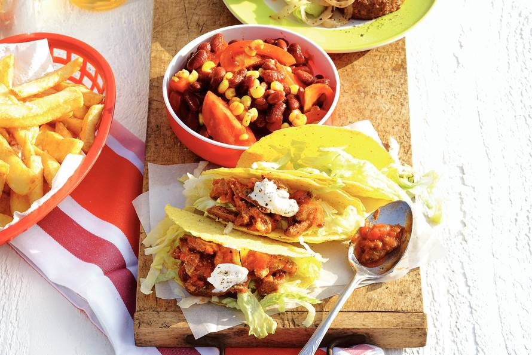

- Gehaktbrood
- Hoofdgerecht
- Nagerecht
Snelle Chili
_________________________________________________________________________________________
Dit gerecht is een heerlijk hoofdgerecht en zeker de moeite waard om het klaar te maken.
Ingredienten
* 1 blik chilibonen (400g)
* 1 blikje maiskorrels (3 x 198g)
* 3 trostomaten
* 1 pak tacoschelpen
* 2 el zonnebloemolie
* 1 schaal runderreepjes (350g)
* 1 potje salsasaus mild (300g)
* 1 zak ijsbergsla (200g)
Bereidingswijze
1. Verwarm de oven voor op 160 graden Celcius. Doe de chilibonen, mais en tomaten in een schaal en schep om. Verwarm de tacoschelpen ca. 5 min. in de oven.
2. Verhit ondertussen de olie in een wok en roerbak de runderreepjes 3 min. met peper en zout. Voeg de salsasaus toe en warm nog 2 min. door.
3. Verdeel de warme tacoschelpen over 4 borden. Verdeel eerst de ijsbergsla over de schelpen en schep dan het vlees met de saus erin. Serveer met de bonensalade. Lekker met zure room (bekertje 125 ml).
